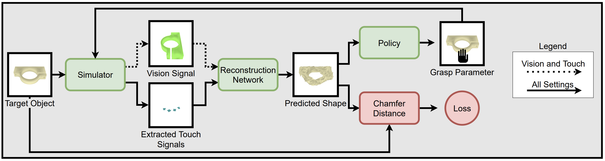
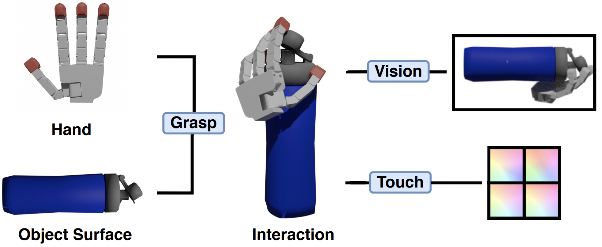
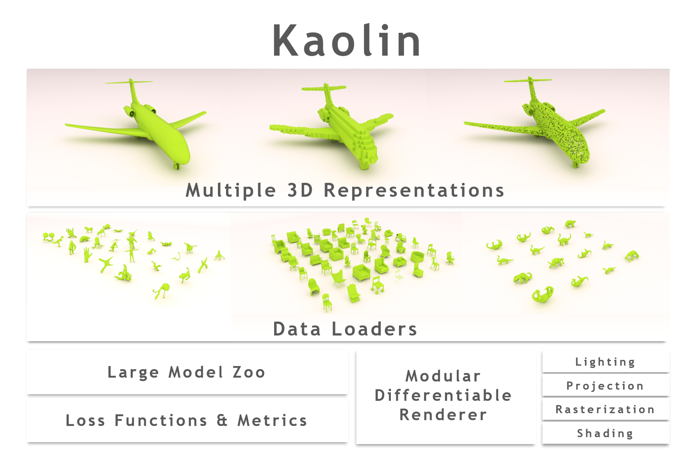
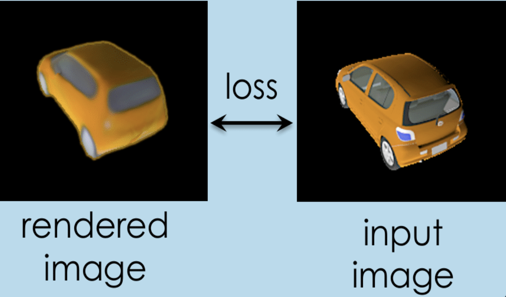
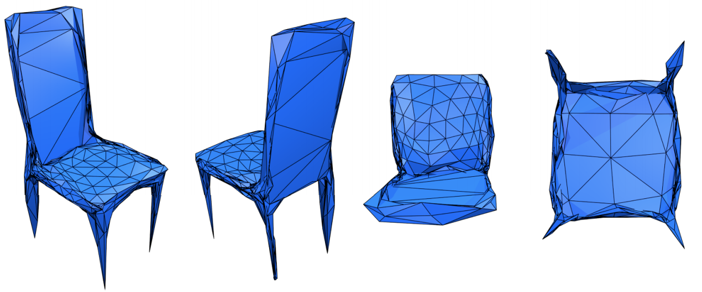
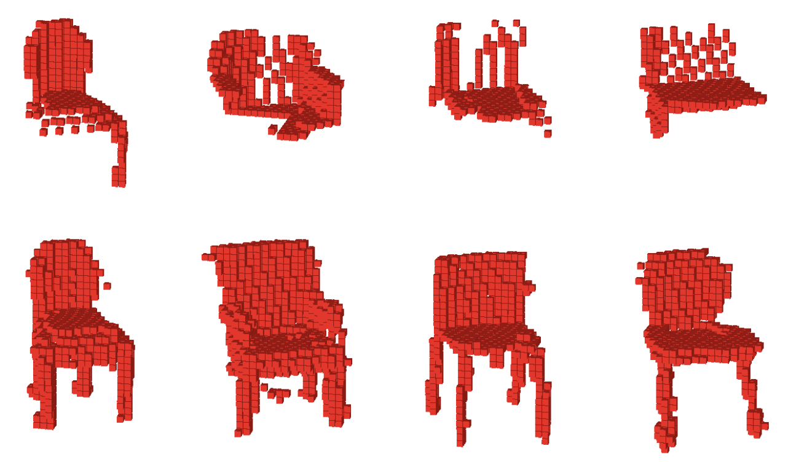

About
I am a PhD student at McGill University in the Mobile Robotics Lab. I am also a visiting researcher at Facebook AI Research. I am supervised by Professor David Meger and Professor Adriana Romero. Please contact me via the email on the left for collaboration opportunities.
My interests lie in the intersection of 3D object understanding and robotics. This includes 3D object generation, and prediction from a variety of input modalities and 3D understanding for robot-object interaction.
Recent Activity
- Active 3D Shape Reconstruction from Vision and Touch was accpeted at Neurips 2021
- Submitted Frame Averaging for Invariant and Equivariant Network Design to ICRL 2021
- Organized the Differentiable 3D Vision and Graphics workshop at ICCV 2021
Papers
|  |
Edward J. Smith, David Meger, Luis Pineda, Roberto Calandra, Jitendra Malik, Adriana Romero, Michal Drozdzal
Active 3D Shape Reconstruction from Vision and Touch
Conference on Neural Information Processing Systems (NeurIPS),
2021
|
|  |
Edward J. Smith, Roberto Calandra, Adriana Romero, Georgia Gkioxari, David Meger, Jitendra Malik, Michal Drozdzal
3D Shape Reconstruction from Vision and Touch
Conference on Neural Information Processing Systems (NeurIPS),
2020
|
|  |
Edward J. Smith, Krishna Murthy Jatavallabhula (Equal-first), Jean-Francois Lafleche, Clement Fuji Tsang, Artem Rozantsev, Wenzheng Chen, Tommy Xiang, Rev Lebaredian, Sanja Fidler
Kaolin: A PyTorch Library for Accelerating 3D Deep Learning Research
arXiv,
2019
|
|  |
Wenzheng Chen, Edward J. Smith*, Jun Gao*, Huan Ling*, Jaakko Lehtinen, Alec Jacobson, Sanja Fidler
Learning to Predict 3D Objects with an Interpolation-based Differentiable Renderer
Conference on Neural Information Processing Systems (NeurIPS),
2019
|
|  |
Edward J. Smith, Scott Fujimoto, Adriana Romero, David Meger
GEOMetrics: Exploiting Geometric Structure for Graph-Encoded Objects
International Conference on Machine Learning (ICML),
2019
|
 |
Edward J. Smith, Scott Fujimoto, David Meger
Multi-View Silhouette and Depth Decomposition for High Resolution 3D Object Representation
Conference on Neural Information Processing Systems (NIPS),
2018
|
|  |
Edward J. Smith, David Meger
Improved Adversarial Systems for 3D Object Generation and Reconstruction
Conference on Robot Learning (CoRL),
2017
|
|
|